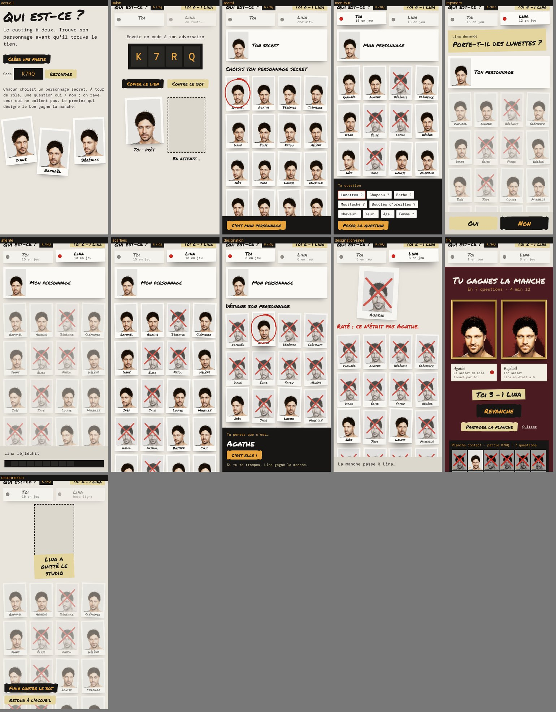
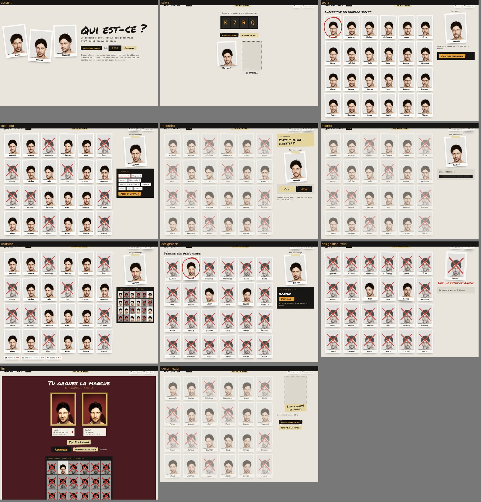

N° 01
Nom Raphaël
Âge 36 ans
Signes barbe, moustache
Qui est-ce ? · prototype 3D
Chaque direction part d'une seule métaphore physique : matières, couleurs, polices, boutons, mise en scène 3D, mouvements et sons en découlent. Le personnage 01 est le même partout (visage, coiffure et rig validés) ; seuls le décor, la lumière et le cadre changent. Survolez une carte : il vous regarde. Cliquez : il est éliminé.
A
Affaire n° 24 — Zilla Slab
Courier Prime pour tout ce qui est tapé : questions, fiches, réponses. Le suspect porte-t-il des lunettes ?
N° 01
Nom Raphaël
Âge 36 ans
Signes barbe, moustache
Question n° 3
Le suspect porte-t-il des lunettes ?
LunettesBarbe
B
Rôle : le témoin
DM Mono pour les numéros de vue et les consignes ; Permanent Marker pour tout ce qui est écrit à la main sur le mur.
Raphaël, 36
Vue 14A
Lunettes ?
lunettesbarbe
C
Portrait d'homme à la barbe
Cormorant Garamond en italique pour les titres des œuvres ; Libre Franklin, sobre, pour les cartels et l'interface.
Raphaël, 36 ans
Barbe, moustache, yeux verts
Salle 1 · n° 01
Troisième question
Le modèle porte-t-il des lunettes ?
LunettesBarbe
B « La séance de casting », avec la révélation finale du salon et la revanche en un clic. Tous les écrans d'une
partie, en bureau et en 390 px : partie.html (un écran seul : partie.html?ecran=mon-tour).
À qui c'est le tour, sans lire : le voyant de tournage rouge s'allume sur le Polaroïd du joueur actif, qui se soulève ;
l'autre pâlit ; la barre d'action est en film noir quand c'est à moi, en papier quand c'est à l'adversaire.

